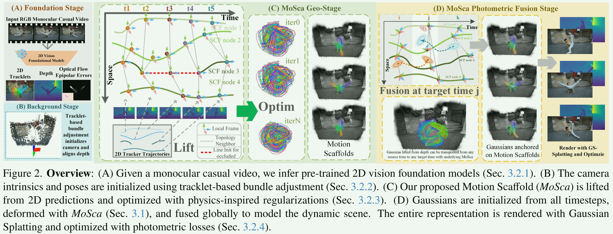
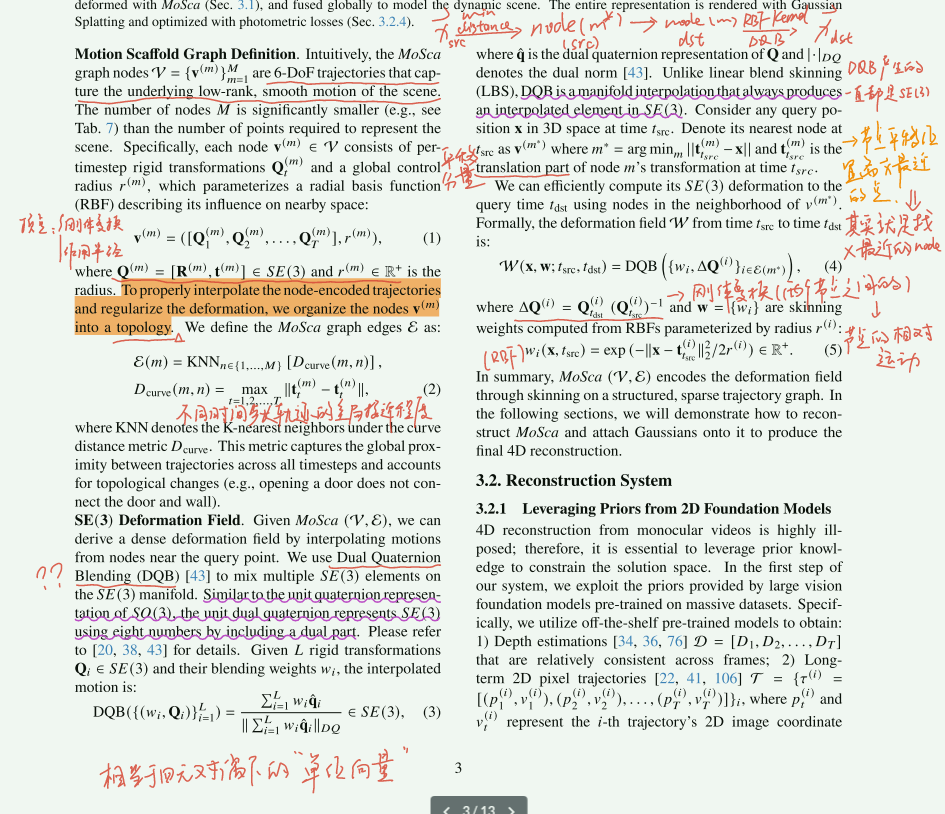
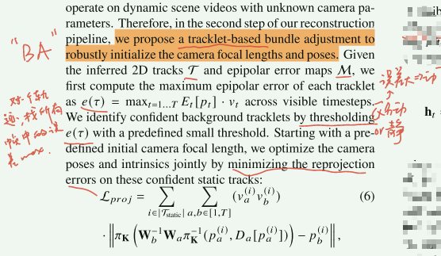
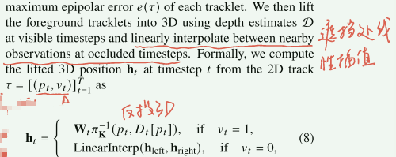
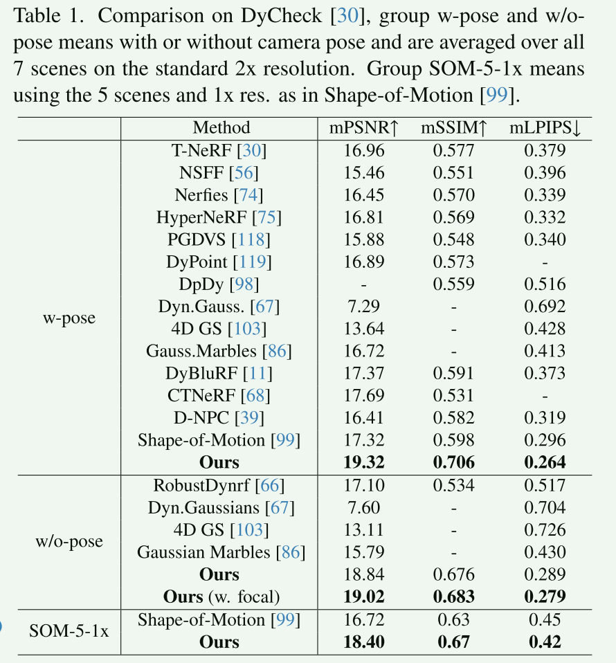
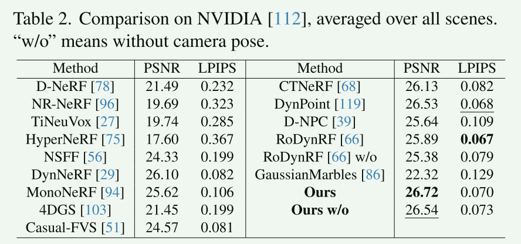
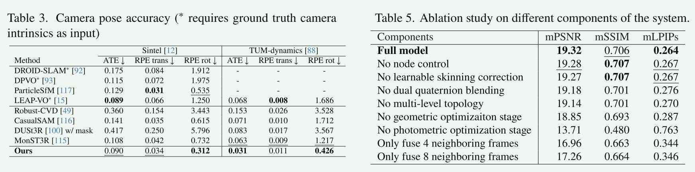
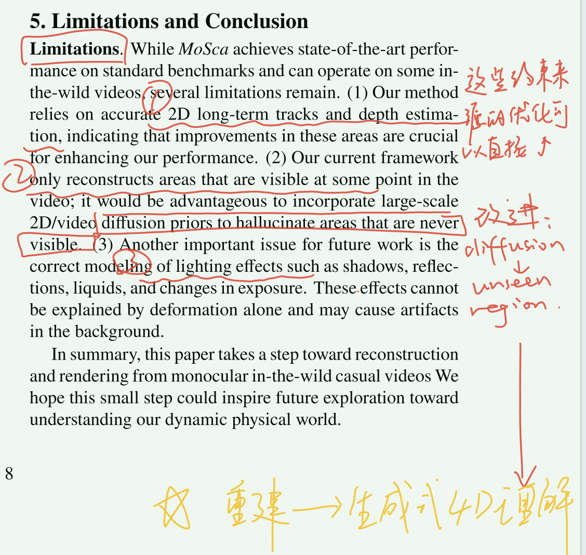

- [[#MoSca: Dynamic Gaussian Fusion from Casual Videos via 4D Motion Scaffolds]]
- [[#0. Pipeline]]
- [[#1. 相关工作]]
- [[#2. 方法]]
- [[#利用2D模型先验]]
- [[#BA]]
- [[#几何优化]]
- [[#光度优化]]
- [[#3. 实验]]
- [[#4. 结论]]
==动态的以大控小；控动渲静，全局优化==
单目无位姿 - 可渲染4D；难：相机运动，单目无多视几何，物体有独立运动；
目标：不依赖 clomap or SfM，利用 2D 大模型先验(Depth / Flow / SAM / epipolar residual) + 物理形变约束；用稀疏的刚体轨迹节点(6DoF 轨迹) 搭起时空形变“支架”，通过插值传播到所有点。
(节点控制局部区域，SE(3)，稀疏节点集描述复杂非刚性变换 -> 结构稳定，可插值，能联合优化)
Motion Scaffold 建立：从长程光流和语义分割采样节点，初始化各节点的空间位置和时间轨迹。
0. Pipeline
思想： 4D Motion Scaffolds (MoSca) ——把“运动/形变”抽象为==稀疏 6-DoF 轨迹图==（每节点是时变刚体变换轨迹 + 影响半径），用它在时空插值稠密 SE(3) 形变场；同时把各帧回投的前景 3DGS 通过 MoSca 形变对齐到任意目标时刻并全局融合再渲染优化。

过程：2D 先验 - 深度融合得到初步点云 - Motion Scaffold - 插值得到连续形变 -> 放置 GS 并通过 mosca 对齐到统一时刻 -> 渲染；
缺：2D 先验不准；局部刚体假设在液体动态中不完全成立；优化时间长，多模态可以进一步加强。
1. 相关工作
Dynamic Novel View Synthesis
有的是同步多视角输入；有的是单目视频；大多数工作对于单目视频的效果都不好；于是有方法在特定场景利用模板模型进行重建。
少数工作尝试处理随手拍的单目视频，通过跨帧信息融合提升效果，但是融合的时间窗口比较短，效果不理想。
NeRF 和 GS 效果都可以，GS显示的点云表示更适合与动态设置，本文使用GS来进行长序列全局融合。
Non-Rigid SfM
- 专注特定类别 or 关节物体；
- 一般场景，配准 + 多帧扫描；
- Embedded Deformation Graph，稀疏基变换节点-全空间稠密形变。本文将其链接到动态GS。
2D Vision Foundation Models
从大规模数据中得到很多先验知识，这个对于单目视频的动态重建很有意义，能够利用多方面的的信息来消除歧义。现在的方法都是直接使用，Mosca把这些信息 lift 到 三维，然后协同使用。
2. 方法
mosca：时间轴上运动的稀疏骨架；用稀疏运动节点来构造全局的动态，然后通过对偶四元数+RBF核 的插值来得到连续时空形变场，再加上GS实现动态重建。

利用2D模型先验
用这些大模型的先验来约束解空间；融合并优化这些先验得到连贯全局的4DR。
- 深度估计：约束帧间一致性；
- 长序列的2D track：约束运动，全局、长期、稀疏的；
- 光流：约束几何一致性；
BA
基于轨迹的BA；后期还根据优化微调；

几何优化
将其他2D先验融合模型中 -> 光流和tracking 让拓扑图节点好确定 -> 但是对于遮挡以及局部旋转还是无法确定的 -> 基于物理的正则项优化；
插值：

插值位置作为平移量，然后把旋转初始为单位阵：Qt(i) = [I,ht(i)]
光度优化
Mosca 的全局变形场可以在任意时刻转化为点云。所以在优化之后对所有的 t 都反向投影得到初始的 GS 。然后把所有时刻的GS通过mosca统一变换与融合。
我们可以得到动态和静态的高斯几何 𝒢(t)和ℋ 融合得到全景4D；
3. 实验



4. 结论
